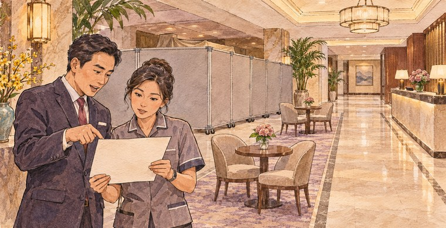

HSP-38 · 香港 · 15–20分钟 · 前台环节的维护作业 · 服务承诺 · 顾客活动不中断
看得见的用心，大堂还能用吗？

看得见作业，不等于体验的全部
运营透明度研究表明，看得到服务工作可能影响顾客的感知价值；服务场景研究则考察环境能否支持使用者完成他们要做的事。两类研究都不意味着让顾客看见维护作业总是更好。这家虚构酒店必须比较自己实际能提供的服务，不能用看得见的努力代替承诺可用的空间。
课堂决策
星期一下午，在香港虚构的 Harbour Court Hotel，经理要从两个已经过评估的时段中选一个，对大堂一部分地面做例行抛光：星期二10:00–12:00，或星期二00:00–02:00。两个时段都包括准备、处理、干燥、检查和恢复使用。没有需要立即清理的泼洒、紧急卫生问题或眼前的危险被搁置。
不论选哪个时段，都由三名具备资质的员工各工作两个带薪小时。同一组员工同意接受任一时段的合规排班，休息、薪酬、工作量和交通安排均有保障。日间作业的总增量成本为1,800港元，夜间为2,400港元，已计入所有有差异的成本项。两种方案都负担得起，也都不改变人员数量或技能配置。
大堂平时有六张双人会谈桌。为保证作业安全，整个两小时内有四张桌子停用，只剩两张可用。通道、电梯、前台和应急通道均保持畅通且无障碍。作业区设有实体隔离，并非只靠警示标志保障安全。
经有资质的人员评估，两种方案都能保护员工和客人、保持通风，并避免打扰客房内休息的客人。剩下的两张桌子可以正常使用，不受噪声或气味干扰。作业区恢复使用前，任何人都不得进入。这些是虚构案例的可行性条件，不是清洁操作指南，也不代表普遍适用的安全干燥时间。
酒店对外宣传，大堂在日间可供客人进行简短的非正式会谈。白天作业，经过的客人看得见；夜间作业通常不那么显眼。经理还没查看星期二已承诺的会谈桌使用安排。目标是完成维护、兑现已确认的会谈桌使用承诺，再比较其余的体验与成本取舍。
两个涵盖全流程的维护时段| 比较项目 | D · 日间 | N · 夜间 |
|---|
| 星期二作业时段 | 10:00–12:00 | 00:00–02:00 |
| 带薪工时（人时） | 6 | 6 |
| 增量成本 | HK$1,800 | HK$2,400 |
| 作业期间可用桌数 | 6张中有2张可用 | 6张中有2张可用 |
你的决策你会暂时选 D 还是 N？在认定某个客流较少的日间时段足够清静、适合维护之前，你必须核实哪些顾客活动和服务承诺？请分别考虑作业是否可见、安全性、空间可用性和成本。
第二轮 · 多了一项资料
星期二的已确认预订记录显示，有六组客人各订了一张桌子，每组两名成人，时段都是10:30至11:30。每组都需要用足一小时，酒店也已确认届时有桌可用。没有任何一组同意改时间、拼桌或换地方。在获批方案内，也没有可用的等效替代空间。
00:00–02:00没有会谈预订，也没有提供会谈空间的承诺。夜间前台服务和无障碍通行均不受影响。采用 N，四张桌子在02:00恢复使用，比日间六场会谈的开始时间早得多。现行时间表和人员配置条件在其他方面均不变。
在另一项独立的虚构现场体验中，十二名自愿参与的成年客人观看了在安全条件下进行的维护布置演示。八人说，看得见的维护让他们更放心，觉得酒店在用心照管场所。四人说，演示本身并没有改变他们的印象。没有人被要求放弃已预订的会谈，这些人也并非预订会谈桌的那六组客人。
这次反馈来自少量经选取的参与者，并未衡量客人对预订安排的接受程度、收入、清洁程度或实际抛光的影响。按评估，两种方案完工后的地面状况相同。经理不能把客人说的「更放心」视为同意取消他人使用会谈桌的资格，也不能把它当成越过隔离设施的许可。
你的决策哪个时段能兑现已确认的服务承诺？算出 D 在预订同时发生时缺几张桌子，以及 N 要多花多少钱。请说明那八条正面反馈能说明什么、不能说明什么，以及如何如实告知客人维护安排，而不为了展示额外安排作业。
讲评 · 大堂看着清静，也可能已有使用承诺
采用 D，只剩两张桌子可接待六组同一时段有预订的客人。整个10:30–11:30都缺四张桌子，有四组小时的已确认会谈桌使用承诺无法兑现。十二名成人需要六张独立的桌子；不能把空着的走道算进去，也不能靠统计只是路过的人来增加会谈接待能力。
四张桌子停用两小时，合计有八桌小时不可用，但按给出的预订记录，受影响的承诺只有四组小时。桌子实际不可用的时间和受影响的承诺要分开算。不能把这八桌小时都当成销售损失，也不能假定四场无法安排的会谈有已知的补偿金额。
讲评 · 选择可行的时段
N 在02:00前完成同样的作业，到10:30，六张桌子都可用。同样是六个带薪人时，N 多花2,400港元 − 1,800港元 = 600港元。如果要求既安全完成作业，又兑现所有已确认的会谈安排，就选 N。
多出的600港元是两套方案的全部增量成本差额，不是花了这笔钱就可以降低对员工的保障，也不是算出来的投资回报。案例没有提供客房收入、对顾客留存的影响或避免支付的补偿金额。
讲评 · 让客人放心，不能让停用的空间变得可用
十二名经选取的现场体验参与者中，有八人，也就是三分之二，说看得见的维护让他们更放心。这说明在这组人中，展示维护作业可能有沟通上的好处。但这并不能证明白天抛光会提高整体满意度、所有住客都更愿意看见维护作业，或已预订的六组客人愿意接受没有桌子可用。
客人可以既重视看得见的维护，也需要不受打扰地使用酒店承诺的空间。这两种反应并不矛盾。维护既有实际的运营结果，也是访客旅程的一环。好印象不能代替酒店已经承诺提供的功能。
讲评 · 如实说明作业和空间可用情况
采用 N 时，可以如实告知客人：大堂部分区域将于00:00–02:00关闭，进行计划内的地面维护，前台和有标识的无障碍通道仍可使用。检查后再确认恢复开放，不要提前请客人通行。也要把同样的时间安排和问题上报渠道告知员工。
酒店可以说明，例行维护会避开已确认的客人使用时段。不应为了展示而在白天做不必要的抛光，不应人为制造用心维护的证据，也不应给员工施压，要求他们做给旁观者看。客人看见作业，可能是妥善服务安排自然带来的结果，却不是凌驾于服务安排之上的目标。
讲评 · 为下一轮维护积累经验
今后制定计划时，要按时段比较已确认的用途和客人要做的事，不能只看大堂客流。记录关闭时长、实际恢复使用的时间、受影响的请求，以及承诺的活动能否照常进行。邀请客人自愿反馈，不记录私人谈话，也不要求他们解释个人原因。
如果换一天，白天没有使用承诺，且仍能满足客人的实际需求和所有安全及用工条件，D 就可能有吸引力。本案例并不意味着所有地方的维护都应安排在夜间。今天的建议取决于已知的预订以及没有获客人接受的替代安排。
教师说明
要求学生分开核查四项：安全、对外宣传的功能、已确认的使用安排、顾客感受。两个时段都通过了第一项核查，但 D 无法满足已确认的使用安排。问问学生：为什么不能拿八条表示放心的反馈去抵消四张缺少的桌子，仿佛两者是在对同一个结果投票？
HSP-13讨论如何协调例行进入私人客房；HSP-16讨论如何设计不同的声环境选择。本案例则把公共区域的支持性作业放在已承诺的共享空间服务中考量。所有时间安排、人员配置、评估、预订和评论均为虚构。引用的研究既不能验证这家酒店的作业方法，也不能证明其符合当地法律，或预测财务回报。
第二轮
星期二的已确认预订记录显示，有六组客人各订了一张桌子，每组两名成人，时段都是10:30至11:30。每组都需要用足一小时，酒店也已确认届时有桌可用。没有任何一组同意改时间、拼桌或换地方。在获批方案内，也没有可用的等效替代空间。
00:00–02:00没有会谈预订，也没有提供会谈空间的承诺。夜间前台服务和无障碍通行均不受影响。采用 N，四张桌子在02:00恢复使用，比日间六场会谈的开始时间早得多。现行时间表和人员配置条件在其他方面均不变。
在另一项独立的虚构现场体验中，十二名自愿参与的成年客人观看了在安全条件下进行的维护布置演示。八人说，看得见的维护让他们更放心，觉得酒店在用心照管场所。四人说，演示本身并没有改变他们的印象。没有人被要求放弃已预订的会谈，这些人也并非预订会谈桌的那六组客人。
这次反馈来自少量经选取的参与者，并未衡量客人对预订安排的接受程度、收入、清洁程度或实际抛光的影响。按评估，两种方案完工后的地面状况相同。经理不能把客人说的「更放心」视为同意取消他人使用会谈桌的资格，也不能把它当成越过隔离设施的许可。
你的决策哪个时段能兑现已确认的服务承诺？算出 D 在预订同时发生时缺几张桌子，以及 N 要多花多少钱。请说明那八条正面反馈能说明什么、不能说明什么，以及如何如实告知客人维护安排，而不为了展示额外安排作业。